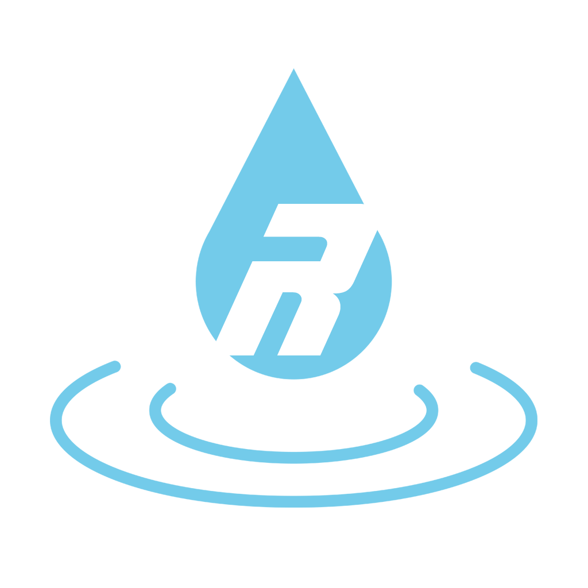
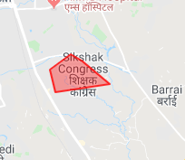
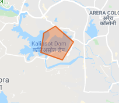

Raahat
-

-
This type of area indicates high risk, and rescue team will arrive here first.

-
This type of area indicates warning, and rescue team will arrive here as soon as all high risk areas have been evacuated.